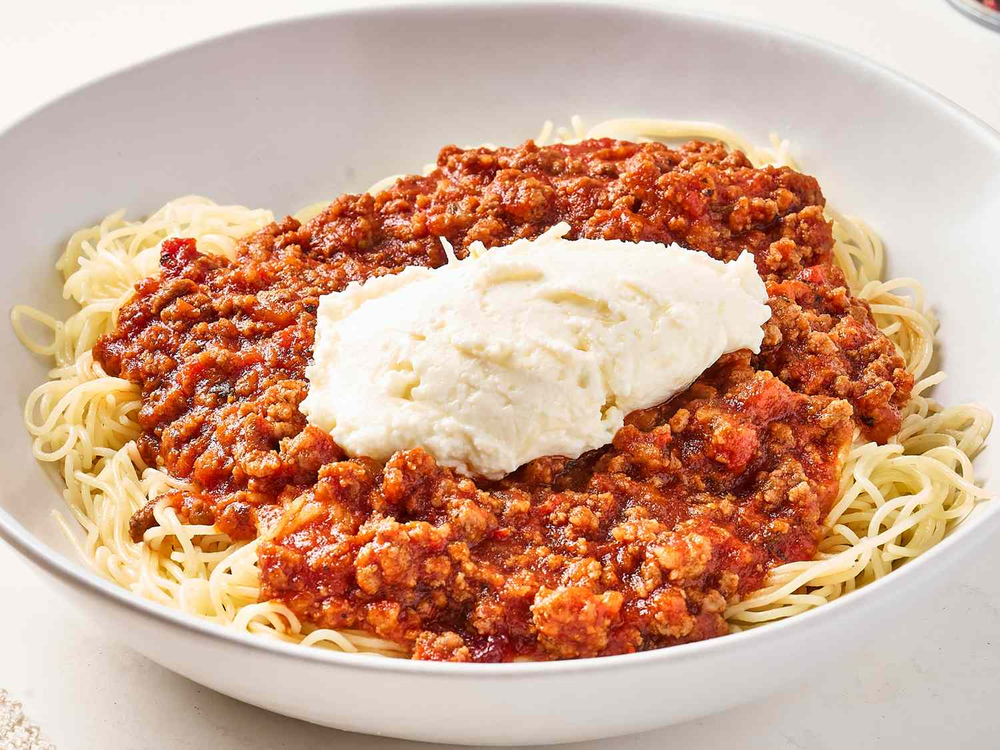

Cranberry Spaghetti

This dish provides a sweet-tart kick from jellied cranberry sauce that you wouldn't expect to be good but somehow is when combined with jarred sauce for a quick shake up meal you should try now.
Ingredients
- 1 pound ground chuck
- 1/2 pound mild country sausage
- 1 1/2 (12 ounces)jars mushroom spaghetti sauce
- 1/2 (14 ounces) can jellied cranberry sauce
- 1 pound angel hair pasta
- 1/2 (15 ounce) container ricotta
- 1 1/2 ounces finely shredded Parmesan cheese
Directions
- Cook and stir ground beef and sausage in a large saucepan over medium-high heat, breaking up chunks with a spatula, until browned and crumbly, about 7 minutes. Strain the grease and return meat to the pot.
- Add 3 jars spaghetti sauce to the pot and bring to a simmer.
- In a small bowl, mash cranberry sauce with a fork and add to meat sauce. Continue cooking for 10 minutes.
- Bring a large pot of lightly salted water to a boil. Cook angel hair pasta in the boiling water, stirring occasionally, until tender yet firm to the bite, 4 to 5 minutes. Drain and set aside to keep warm.
- Combine ricotta and Parmesan cheese in a small bowl and set aside.
- Serve meat sauce over angel hair pasta and top with a dollop of ricotta mixture. Serve immediately.
Home